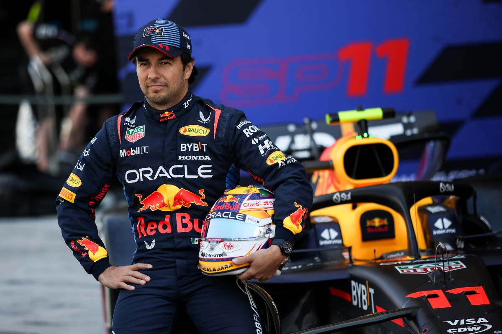

Red Bull Racing

Historia
Red Bull Racing debutó en la Fórmula 1 en 2005 tras la compra de Jaguar Racing por parte de la empresa de bebidas energéticas Red Bull.
Con sede en Milton Keynes, Reino Unido, el equipo se ha caracterizado por su innovación, audacia y un enfoque agresivo en el automovilismo.
Bajo la dirección de Christian Horner y el asesor técnico Adrian Newey, Red Bull pasó de ser un equipo joven a dominar la Fórmula 1 en la década de 2010 y nuevamente desde 2021 con Max Verstappen.
Palmarés
- 🏆 Campeonatos de Constructores: 6 (2010, 2011, 2012, 2013, 2022, 2023).
- 🏆 Campeonatos de Pilotos: 7 (Vettel 2010-2013, Verstappen 2021-2023).
- 🥇 Más de 110 victorias en Grandes Premios.
- 🥈 Más de 250 podios en su historia.
- 🚀 Pilotos icónicos: Sebastian Vettel, Mark Webber, Daniel Ricciardo, Max Verstappen.
Pilotos actuales
Max Verstappen 🇳🇱

Nacido en 1997 en Países Bajos.
Debutó en F1 en 2015 y en 2016 ganó en su primera carrera con Red Bull en España.
Es tricampeón mundial (2021, 2022, 2023) y considerado uno de los pilotos más dominantes de la era moderna.
Reconocido por su agresividad, consistencia y velocidad en clasificación y carrera.
Sergio "Checo" Pérez 🇲🇽

Nacido en 1990 en Guadalajara, México.
Se unió a Red Bull en 2021, aportando experiencia y grandes actuaciones.
Ha conseguido victorias clave como en Bakú y Mónaco, además de múltiples podios.
Es muy valorado por su defensa estratégica, especialmente recordada en Abu Dhabi 2021.
⬅ Volver al inicio